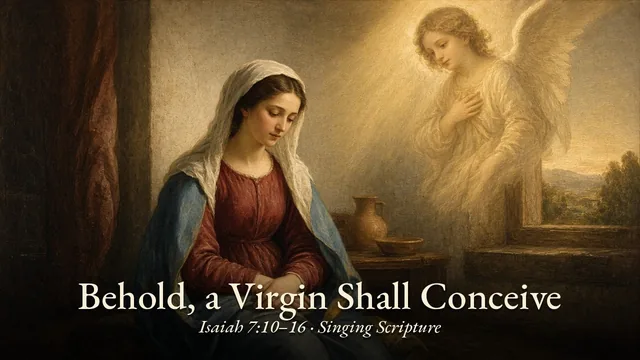
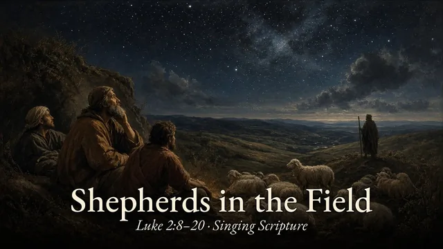
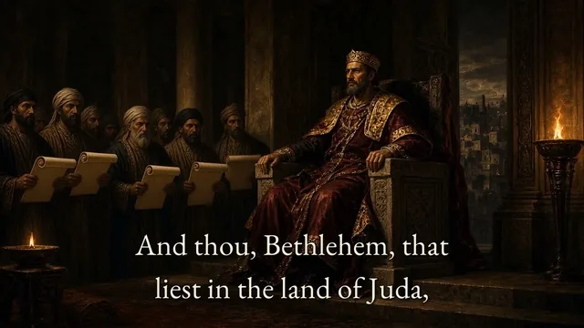
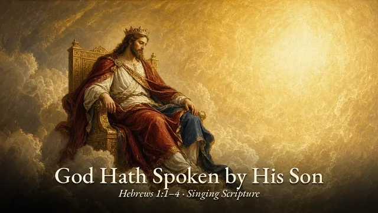

Playlists
Playlists
Songs gathered for a season or a theme, in the order they are meant to be heard.
Tap a picture to play it here, or play the whole playlist on YouTube. New playlists appear here as they are added to our YouTube channel.
Christmas: The Birth of Jesus in Scripture
18 songs, in playlist order. Play the whole playlist on YouTube ›

Isaiah 7:14 (KJV)

Isaiah 9:6 (KJV)

Isaiah 11:1 (KJV)

Adapted from Micah 5:2 (KJV)

Isaiah 40:6 (KJV)

Luke 1:28 (KJV)

Luke 1:45 (KJV)

Luke 2:7 (KJV)

Adapted from Luke 2:8 (KJV)


Adapted from Matthew 2:6 (KJV)


Adapted from John 1:10 (KJV)

Galatians 4:5 (KJV)

Adapted from Philippians 2:9 (KJV)

Adapted from Hebrews 1:2 (KJV)